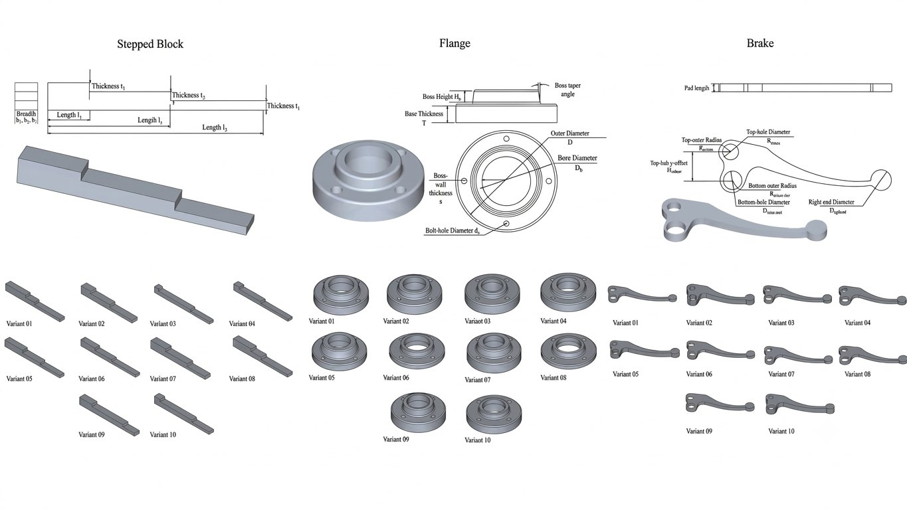
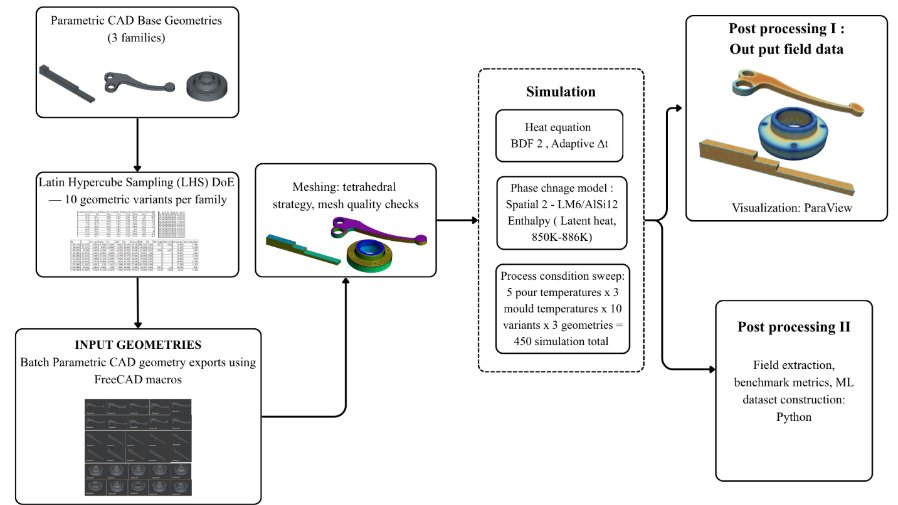
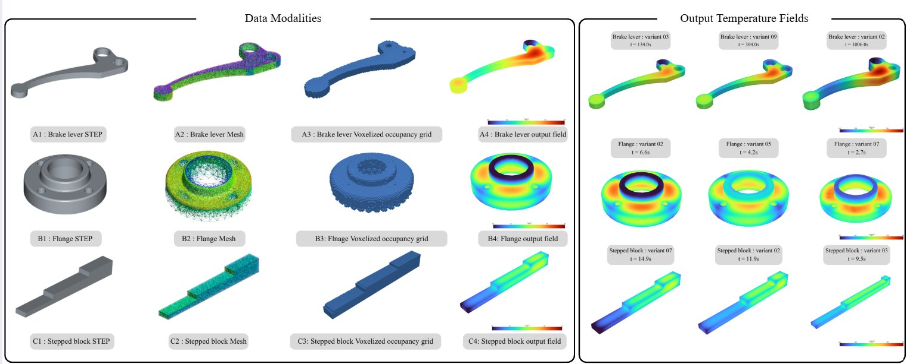

In our manufacturing processes course we learn that a good casting engineer can “see” where a part will solidify last. Thick sections stay hot, thin sections freeze first, and if the hot spot is cut off from the feeder you get shrinkage. It sounds simple until you try to put a number on it for a part you have never poured before.
Finite-element simulation can put that number on it. The catch is that every new geometry and every new pouring temperature is a fresh solve. That is exactly the kind of repetitive, expensive computation machine learning is supposed to help with, so I went looking for an open dataset to train on. I could not find one that I could actually use, so we built one. This post is the story of how.
The gap we kept running into
Some earlier work learned casting temperatures from simulation, but each study used its own private database. Some used procedurally generated 2D shapes stored as images; others kept the real finite-element temperatures but varied only the pouring temperature on one fixed part. What was missing was a benchmark where 3D geometry and process conditions are both varied in a controlled way, and where the mesh and the full transient field are still there when you open the files.
A temperature value without its spatial context is not enough to study how geometry affects prediction. Geometry without its transient field gives you nothing to learn.
Step 1 — Three families, ten variants each
We picked three geometry families that every mechanical student will recognise from a casting drawing: a brake lever, a flange and a stepped block. Each family is a parametric CAD model with a fixed topology. The flange, for example, is driven by its outer diameter (80–140 mm), base thickness (10–25 mm), bore ratio, boss-wall thickness, boss height and taper, and bolt-hole diameter, with four bolt holes on the bolt circle.

Instead of a full factorial design (which explodes very quickly), we sampled the design parameters with Latin Hypercube Sampling. LHS spreads ten samples across the whole parameter space while keeping the variants recognisably “the same part”. The brake lever was the trickiest: we moved three anchor points and dragged every other sketch point along using inverse-distance-weighted interpolation, so originally coincident points stay coincident and the sketch never breaks.
Why every variant gets its own mesh
A shortcut would have been to morph one base mesh into all ten shapes. We did not. Each STEP file is meshed independently with first-order tetrahedra (Frontal-Delaunay on the surface, HXT in the volume), with local refinement around holes, fillets and curved features. We kept the quality metrics in a target band (SICN 0.87–0.90, Gamma 0.80–0.90) for every variant. That way the temperature field always sits on the mesh that actually belongs to that geometry.
Step 2 — The same process grid for every part
Every variant sees exactly the same process conditions: five pouring temperatures (953, 973, 993, 1013 and 1033 K) and three mould temperatures (303, 353 and 403 K). That is 15 cases per variant and
Keeping the grid identical separates process variation from geometry variation, which matters later when you want to ask questions like “is the model bad on the flange, or bad at high pouring temperatures?”
Step 3 — Solving the thermal problem in Elmer FEM
The transient solve uses the open-source Elmer FEM solver with an enthalpy-based phase-change formulation, BDF2 time integration and a temperature-dependent convective boundary condition between casting and mould. LM6 (Al–Si12) properties such as specific heat and conductivity are temperature dependent; from the enthalpy table, the effective solidus and liquidus come out at roughly 850 K and 886 K.

One detail that taught me a lot about solver practice: the time step is not constant. Early in the transient, when the temperature changes fastest, we take 0.1 s steps; later we coarsen to 0.5, 2 and finally 20 s steps. A single fixed step would either waste hours at the end or miss the physics at the start.
Step 4 — Keeping geometry and temperature together
This is the part I am proudest of, even though it is the least glamorous. For each case the released data keeps the node coordinates, mesh connectivity, signed-distance values, process parameters and time-resolved nodal temperatures, plus a metadata record linking the case ID to its CAD, mesh and field files and to its train/val/test split.

Splitting by geometry, not by time step
If you shuffle individual time steps into train and test sets, the model will happily “predict” a part it has already seen a second earlier. So we split at the geometry-variant level: 8 variants per family for training, 1 for validation and 1 for testing. Three held-out test geometries is a small test set, and we say so clearly in the paper; the split seed (42) and manifest are released so anyone can reproduce or extend it.
What I would tell a classmate starting a similar project
- Design the data before you run the solver. Decide how each case will be identified and stored on day one.
- Mesh each geometry on its own. Morphing is faster but hides geometry-specific detail.
- Write down what your model does not do. Ours does not simulate filling. Saying it early saves arguments later.
- Split by part. Anything else measures memory, not generalisation.
All 450 cases are released as preprocessed PyTorch tensors together with the generation and benchmark scripts, under CC-BY-4.0, on GitHub. In the next post I look at what happens when we actually train models on it, and why one of them has about 40 times lower error on the stepped block.